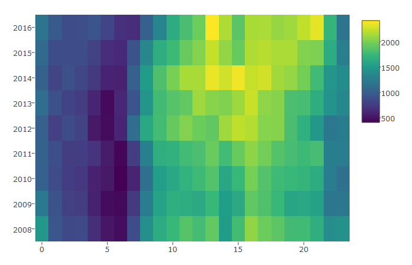
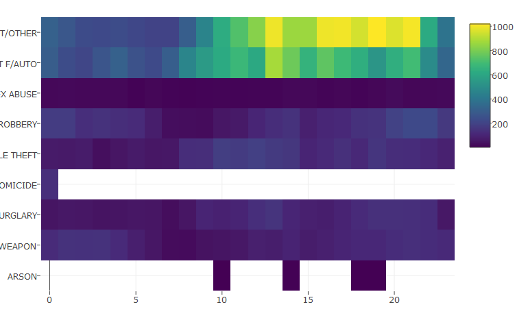
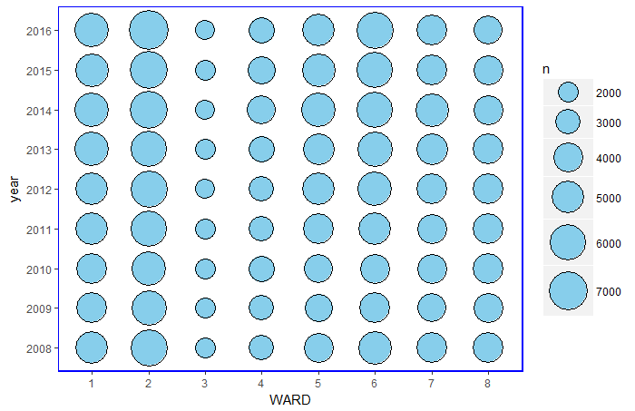
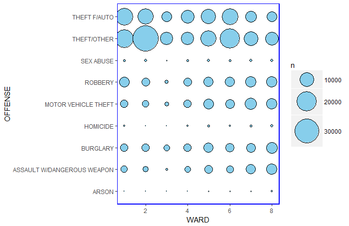

In 2008, the District of Columbia Metropolitan Police Department reported a total of 34,205 crime incidents and in 2016, 37,186 crime incidents were reported. The bar plot below also shows that the crime incidents have been increasing steadily since 2009 with a peak in 2014.
Count of crime incidents from 2008-2017

A closer look at the types of crimes that are contributing to the increase in number of crime incidents over the past 7 year revealed theft to be the main culprit. While there's a decline in the number of burglary, there are also slight increases in other crime types such as robbery and sex abuses. (The graph also shows decreases in incidences of motor vehicle theft but auto theft has been increasing since 2009) In the 1900's, Washington DC was known as the "murder capital" with 472 homicide cases. In 2008, the number of homicide cases drop by more than half at 178 cases reported. Incidents of homicides were the least at 2012 at 89 cases and stayed pretty low until 2015 when it reached 160 cases which caused quite a stir. By June 2017, there are only 52 cases of homicides, which is less than half of the number of cases in 2016.
Count of each crime type, 2008-2016

There's a saying that darkness hides the worst of human's behavior. So, normally we could expect the number of crimes to peak during the time of darkness. However, in Washington DC, most of the crimes are commited in the day time! In 2016, they peaked at 1pm and 9pm and in 2014, they peaked at 1pm and 3pm. A closer look at the spread of 2016 crimes also revealed that theft was dominating the day time crime incidents, along with burglary, while crimes relating to robbery and weapon seemed to be higher during the hours of darkness.
Heatmap of crime incidents during different time of the day, 2008-2016

Heatmap of crime incidents during different time of the day in 2016

The neighborhood with the lowest amount of crimes was not surprisingly in Ward 3, which is a highly residential area consisting of Cleveland Park, Chevy Chase, Woodley Park. The wards with the highest crime incidents are the busy, downtown, touristy area such as the National Mall, White House, China Town, the Hill and the monuments and museums (Ward 2 and 6). While the dominating offense type is theft in Ward 2, there seems to be more burglary, robbery and assault with dangerous weapon seems higher in Ward 7 and 8, which have several federal and local institution, single family homes and a diverse community.
Count of crime incidents by ward, 2008-2016
 So, if you are out on the Mall or the Hill, watch out for your cars and items, especially in the afternoon!
Notes: The data is available through Open Data DC and the complete codes for this post is available on my github page.